01
من الموقع اضغط زر "تحميل الأداة مجاناً"
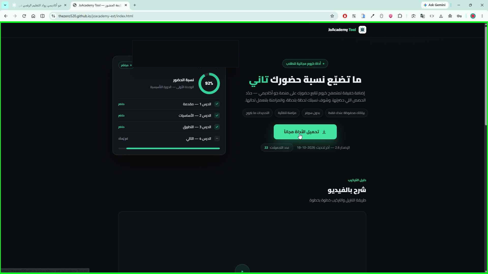
13 صورة بتفصّل كل ضغطة — التحميل، فك الضغط، التركيب على كروم، والتجربة على جو أكاديمي. بدون تعقيد وبتاخذ 3 دقايق.
من الموقع اضغط زر "تحميل الأداة مجاناً"

احفظ ملف ZIP — الأفضل تخزنه بسطح المكتب عشان تلاقيه بسرعة
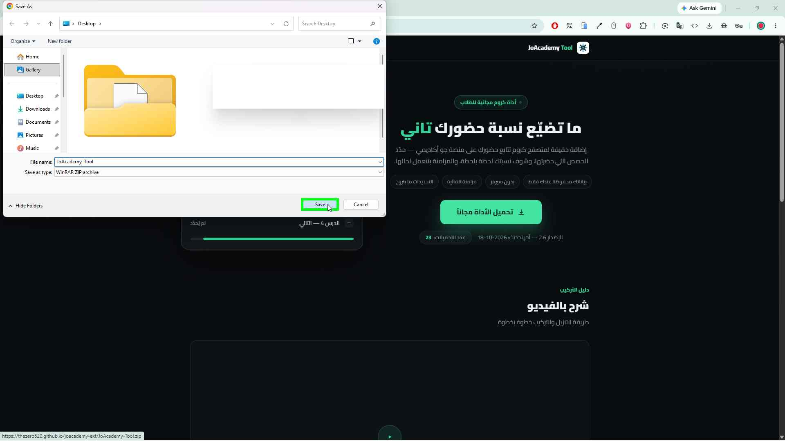
هذا هو الملف بعد ما ينزل: JoAcademy-Tool.zip
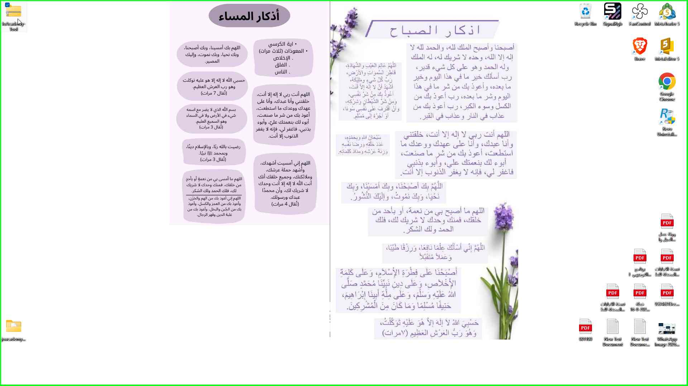
كليك يمين على الملف → اضغط "Extract All..." لفك الضغط
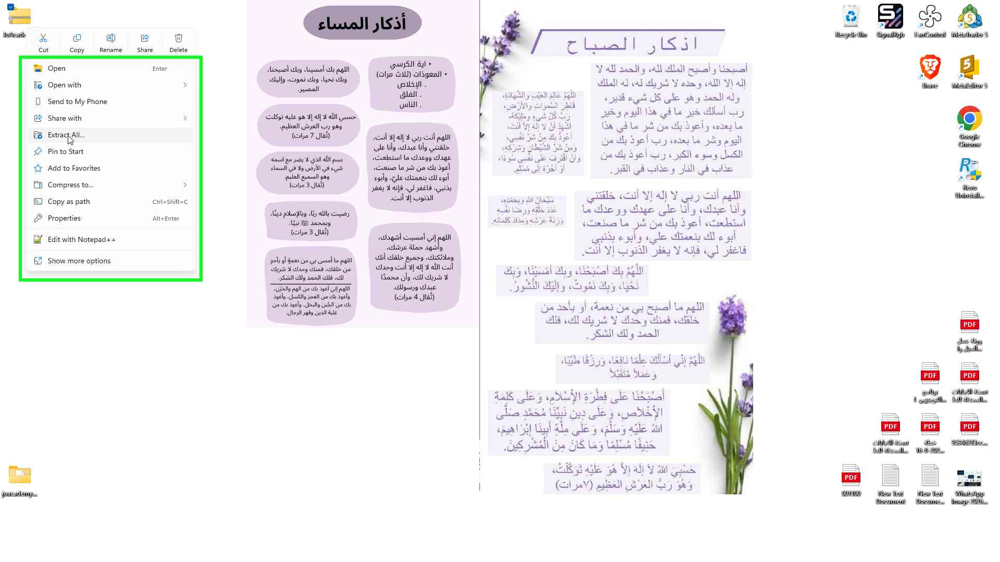
اضغط "Extract" — بيتفك الضغط بمجلد جديد بنفس الاسم
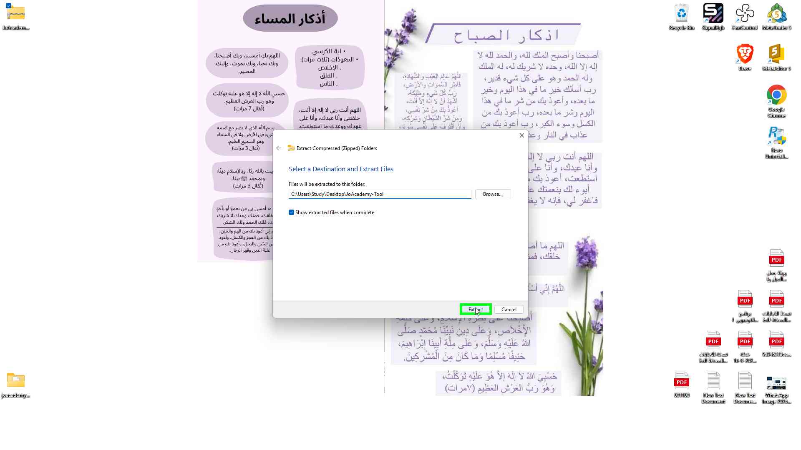
افتح كروم واضغط النقاط الثلاث ⋮ فوق يمين، وبعدين "Extensions"
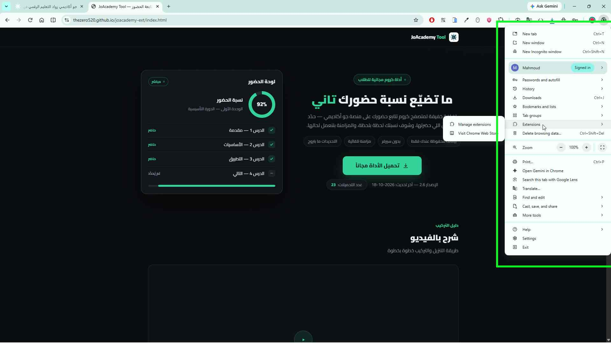
اختر "Manage extensions" (إدارة الإضافات)
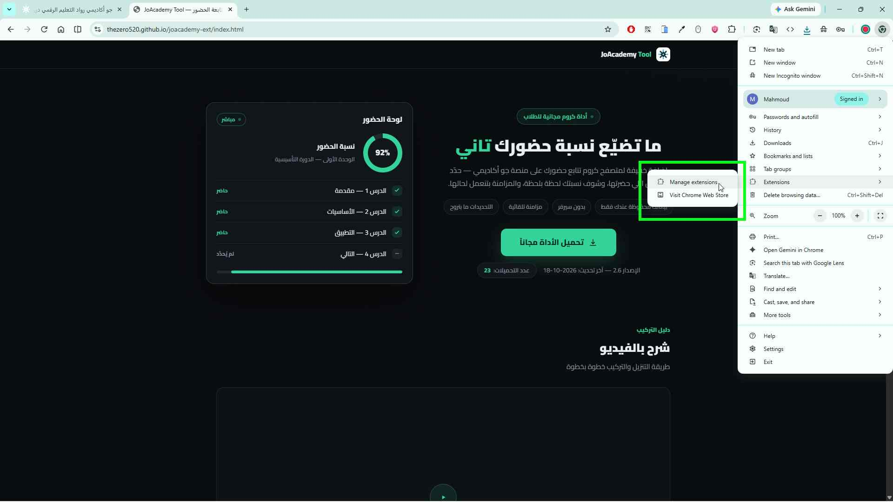
فعّل زر "Developer mode" (وضع المطوّر) فوق يمين
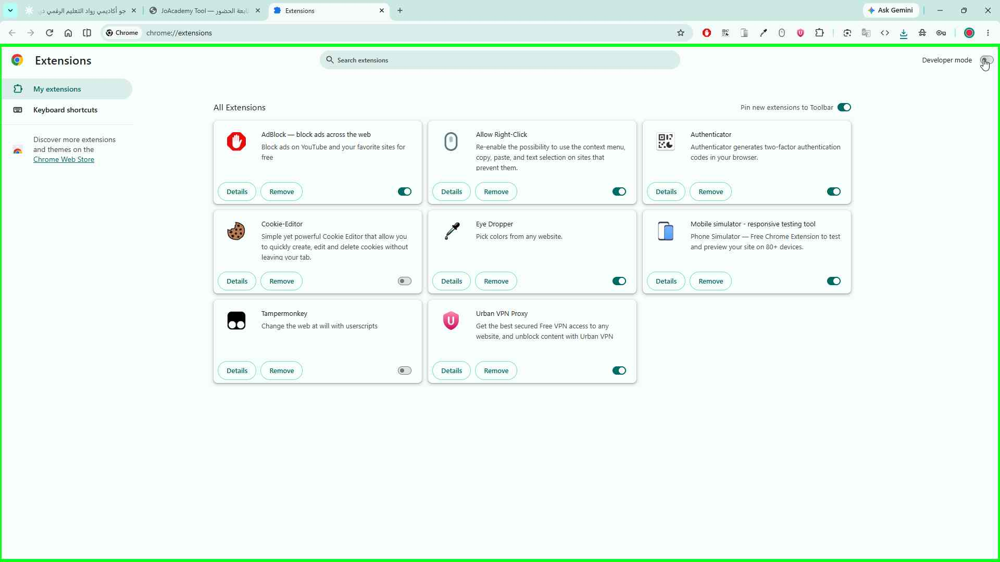
بتظهر أزرار جديدة فوق — اضغط "Load unpacked" (تحميل حزمة مفككة)
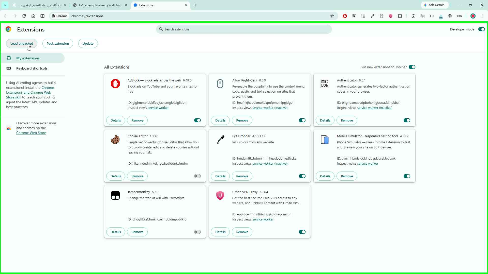
روح على سطح المكتب وادخل مجلد JoAcademy-Tool اللي فككته
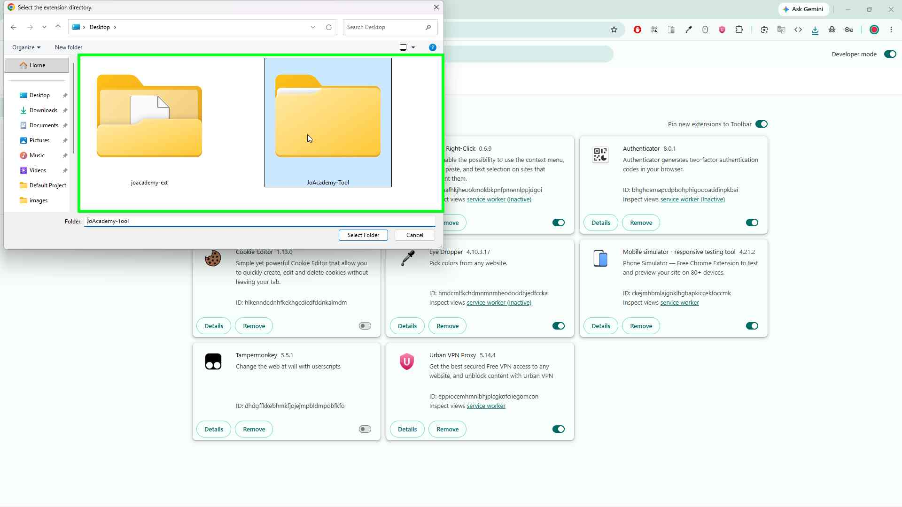
مهم: داخل المجلد اختر المجلد الداخلي "joacademy-ext" — هذا الصح
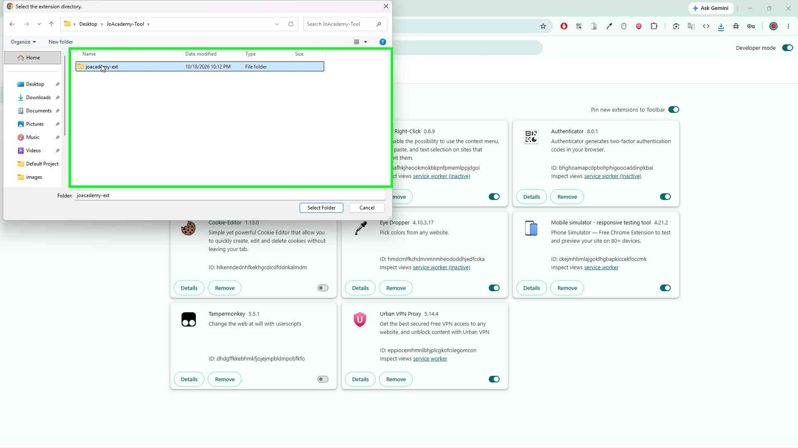
اضغط "Select Folder" (اختيار المجلد) — وبس، الأداة انركّبت
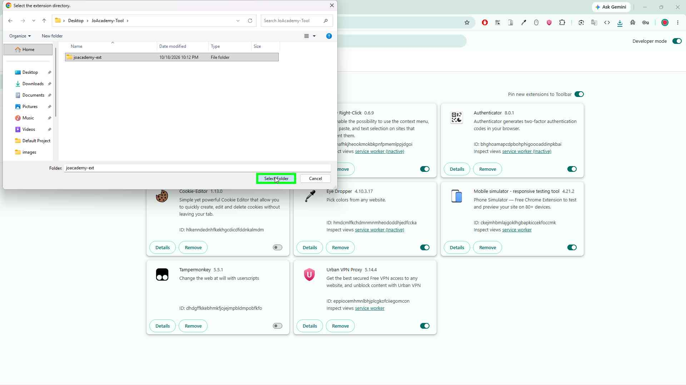
افتح جو أكاديمي وشغّل درس — الأداة بتحدد الحصص المشاهدة وبتحسب نسبة حضورك تلقائياً
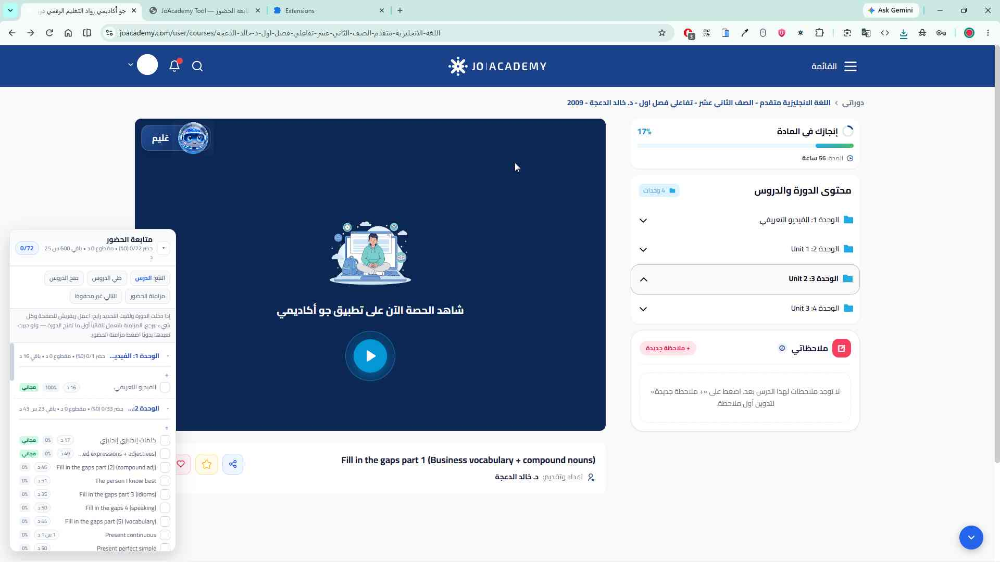
لا تحذف مجلد JoAcademy-Tool بعد التركيب — خزّنه بمكان ثابت. لو حذفته أو نقلته، الأداة بتوقف وبحتاج إعادة تركيب.
ممكن تطلع بكروم رسالة تحذير "Disable developer mode extensions" — اضغط تجاهل / إلغاء وما تقلق، هادي عادية مع التركيب اليدوي.
أي تحديث للأداة بينزل من نفس الموقع — نزّل النسخة الجديدة وكرر نفس الخطوات بس.
الصور ملتقطة بكروم الإنجليزية — بمتصفح عربي بتلاقي نفس الأسماء بالعربي (المطوّرين، تحميل حزمة مفككة، اختيار المجلد).